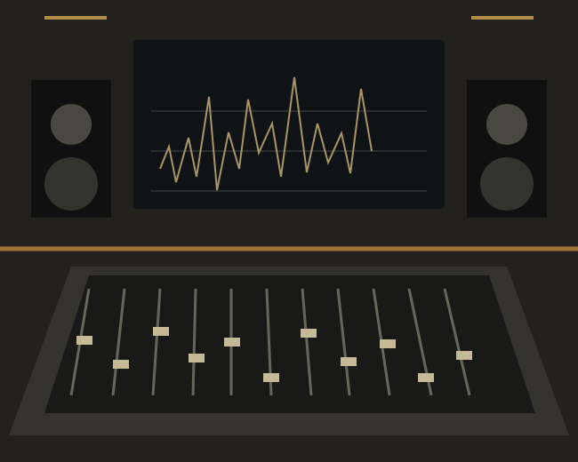

Beat Licensing
A starting point with its own character. Discuss usage, stems and licence terms before release.
INDICATIVE / FROM $150MUSIC PRODUCER · RECORDING STUDIO CONCEPT
LONDON / WORLDWIDE REMOTELY
From the voice note to the final bounce.
Production, recording and mixing with the song at the centre.
Fictional artist. Original synth demos, not commercial recordings.
THE SOUND / ORIGINAL BROWSER SKETCHES
Six original 4-second synthesis studies. Press play to hear a quiet tone pattern, not a finished production. No autoplay. Set your volume comfortably low.
NO STUDY PLAYING
FROM A SPARK TO A FINISHED IDEA
A starting point with its own character. Discuss usage, stems and licence terms before release.
INDICATIVE / FROM $150Build around the artist, from arrangement and sound design to the final production direction.
INDICATIVE / FROM $800Space, impact and intention. Explore delivery formats and revision scope for your project.
INDICATIVE / FROM $250ILLUSTRATIVE SESSION LOG
Placeholder projects only.
No artist association or released credits claimed.
| Night Transit | PRODUCTION / SOUND STUDY | 2026 |
|---|---|---|
| Blue Hour | ARRANGEMENT / SOUND STUDY | 2026 |
| Afterimage | SYNTHESIS / SOUND STUDY | 2026 |
| Low Ceiling | BEAT DESIGN / CONCEPT | 2025 |
| Soft Signal | MIX DIRECTION / CONCEPT | 2025 |
| Open Circuit | PRODUCTION / CONCEPT | 2025 |
| Room Tone | RECORDING / CONCEPT | 2024 |
| Last Light | MASTERING / CONCEPT | 2024 |
A ROOM FOR THE RIGHT IDEAS
An intimate London studio concept, imagined for focused sessions and remote collaboration. Start with the sound you’re looking for, not a wall of equipment.
Reference gear from the original brief, not owned equipment claims:

A GOOD RECORD STARTS WITH A CONVERSATION
No working email or social account is represented.
Create a local brief to organise your next conversation.